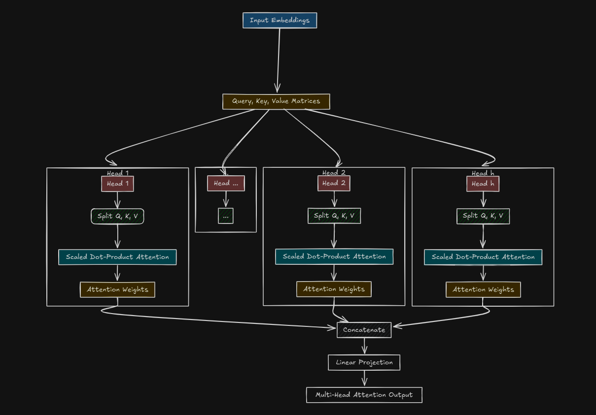
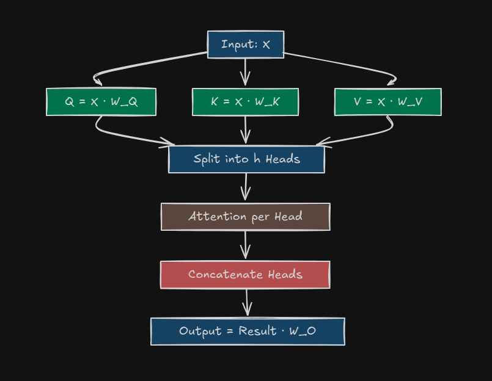

Complete the attention blog to get an idea why even Multi-Head is needed. Its like a homework you can do to understand better about the topic of this blog.
Dot Product Attention
> Dot Product attention is a specific type of attention mechanism that computes attention scores using the dot product between vectors.
> Computing the dot product between each query vector \(\text{Q}\) and each key vector \(\text{K}\). This gives a raw measure of similarity between the query and the keys. \[\text{Raw Scores} = \text{Q} \cdot K^T\]
The result is a matrix where each entry represents the similarity between a query and a key
Emeddings
> Embeddings are a way to transform raw input data—like words, tokens, or symbols—into dense, continuous vectors of numbers that a machine learning model can understand and process. Here embeddings are crucial because they provide the starting point for computing Queries (Q), Keys (K), and Values (V), which drive how the model focuses on different parts of the input.
Dimensionality
> It refers to the number of features, attributes, or components used to represent data in a mathematical space. In simpler terms, it describes how many "dimensions" or variables are present in a dataset or a vector for a machine to learn.
Softmax Function
> Softmax is a mathematical function which converts a vector of real-valued numbers into a probability distribution, where the values are non-negative and sum to 1. This makes it ideal for scenarios where you need to assign probablities to multiple classes to options.
Multi-Head Attention from Beginners POV
In Transformers, Multi-Head Attention takes the same Query (Q), Key (K), and Value (V) inputs as single-head attention but splits the work across multiple “heads.” Each head focuses on different aspects of the input—like grammar, meaning, or context—and together, they give the model a more nuanced understanding. It's the secret sauce behind why Transformers are so good at everything from translation to generating text like this!

This is how Multi-Head Attention works inside, we will discuss everything about this diagram later in this blog. For now lets cover a main topic which is
Why "Scale" the Dot Product ?
In the original dot-product attention, the raw scores can become very large if the dimensionality of the query and key vectors \(
(d_k)\) is high. This can cause the softmax function to produce extremely small gradients, leading to numerical instability during training.
To address this issue, the scaled dot-product attention introduces a scalling factor
Here, \(
(d_k)\), is the dimensionality of the key vectors. Dividing by \(\sqrt{d_k}\) ensures that the dot product are scaled appropriately, preventing the softmax function from saturing
After all this you might get up with a question
Why Multi-Head Attention ?
Single head attention is great, but it's limited. It computes one set of attention weights and mixes all the information into single output. That's like trying to hear every instrument in symphony with one ear it works, but you miss the layers. Multi-Head Attention says, "Why settle for one prespective?" By running attention multiple times in parallel. each with its own lens (or "head"), the model captures diverse relationships in the data-like how " it" refers to "cat" in one head, while another head notices the verb tense.
Plus, its still parallelizable (unlike RNN's), so its fast. More heads = more insights, without slowing things down. Genius, right ?
Now one would wonder if Multi Head Attention helps so much, how does it work under the hood ? So lets start with our second most important topic which is
How Does Multi-Head Attention Work ?

Let’s get into the nitty-gritty. Here’s the step-by-step breakdown, with all the crazy details:
Start with Q, K, V
We've got your input sequence turned into embeddings (say a matrix (X) of shape \(\text{batch_size} \times \text{sequence_length} \times d_{\text{model}}\))
From (X), we can compute \[Q = X \cdot W_Q \] \[K = X \cdot W_K\] \[V = X \cdot W_V \]
Here, \(d_{\text{model}}\) is the embedding size (e.g., 512 in the original Transformer). Each (W) is a learned weight matrix
Split Into Heads
Instead of using the full \(d_{\text{model}}\) dimensional vectors, split them into (h) heads (e.g h=8)
Each Head gets a smaller chunk of the dimensions: \(d_k = d_v = d_{\text{model}} / h\) (e.g., 512 / 8 = 64)
For each head (i):
\[Q_i = X \cdot W_Q^i\] (shape: \(\text{batch_size} \times \text{sequence_length} \times d_k\))
\[K_i = X \cdot W_K^i\] (shape: \(\text{batch_size} \times \text{sequence_length} \times d_k\))
\[V_i = X \cdot W_V^i\] (shape: \(\text{batch_size} \times \text{sequence_length} \times d_v\))
Each \(W_Q^i, W_K^i, W_V^i\) is a slice of the original weight matrices, tailored to that head
Run Attention per Head
For each head (i), compute Scaled Dot-Product Attention:
\(W_O\) (shape: \(h \cdot d_v \times d_{\text{model}}\)) ensures the output shape is \(\text{batch_size} \times \text{sequence_length} \times d_{\text{model}}\), ready for the next layer
For self-attention, (Q, K, V) all come from the same (X)
For cross-attention (e.g., in the decoder), (Q) might come from the decoder, and (K, V) from the encoder
Okkay now we are heading to the part which everyone liked in the previous blog. Yupp the INTUITION. Sorry if I cannot carry up the hype, but I will try my best <3
Intuition : (Heist Edition)
Your are a Detective | 刑事
There has been a recent Bank Heist in your nearby bank and you are piecing together the details of the heist : The thief escaped after the guard dozed off. With single-head attention, you are like one detective with a flashlight, sweeping the crime scene and connecting clus. You might lock onto "thief" and "escaped" but miss how "guard" and "dozed off" set the stage for the getaway !!
Now Multi Head attention steps in like a team of detectives, each with their own flashlight and intelligence
Detective 1 : Focuses on the players (“thief” → “guard”). Who’s involved? They spot the key characters in this drama.
Detective 2: Tracks the action and timing (“escaped” → “dozed off”). When did it happen? They link the verbs to figure out the sequence.
Detective 3: Sniffs out the cause-and-effect (“after” ties it all together). Why did it work? They catch the sneaky logic of the heist.
The result? A richer, multi-layered picture of the heist—way more detailed than what one lone detective could crack on their own.